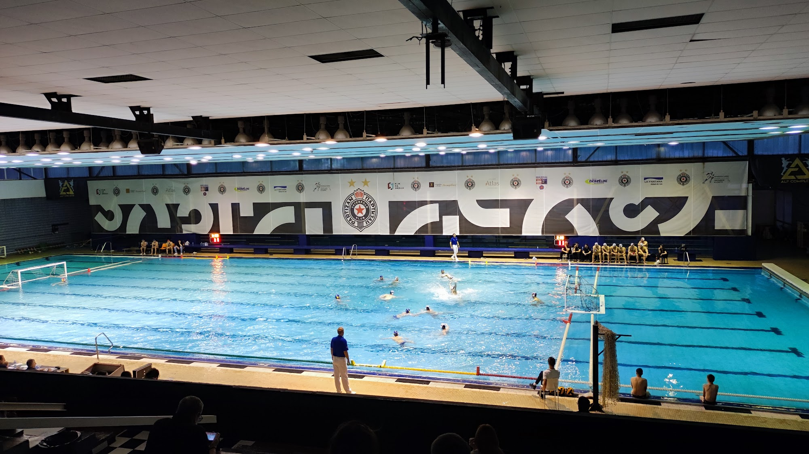

1974
Ustanova Sportski centar Voždovac. Osnivač: Gradska opština Voždovac. Vlasnik kompleksa: Grad Beograd.
Centar je podignut 1974. na Banjici, na 4,7 hektara između šume i solitera. Od prvog dana deli istu adresu sa plivalištem — Crnotravska 4 — i istu namenu: takmičenje i rekreacija.
Velika hala prima 2.300 gledalaca. Zatvoreni olimpijski bazen ima 2.000 sedišta i još 1.000 stajaćih mesta. Uz njih stoje mali zatvoreni bazen, dva otvorena olimpijska bazena, mala i trim sala, salon stonog tenisa, teretana i šest teniskih terena.
Na parketu su godinama igrali RK Partizan, ŽRK Crvena zvezda, ORK Beograd, RK Obilić, RK PKB i RK SC Voždovac. Na vodi — plivanje, vaterpolo i sinhrono plivanje, od pionira do seniorskih priprema.
Leti platô postaje gradsko kupalište. Zimi se ritam prebacuje na zatvorene termine, škole sporta i večernje rezervacije sala.

Klubovi